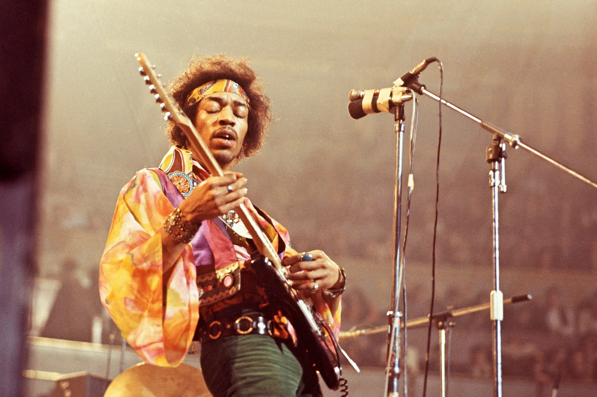
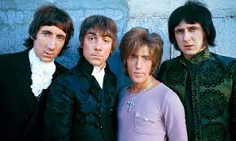
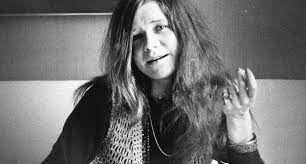
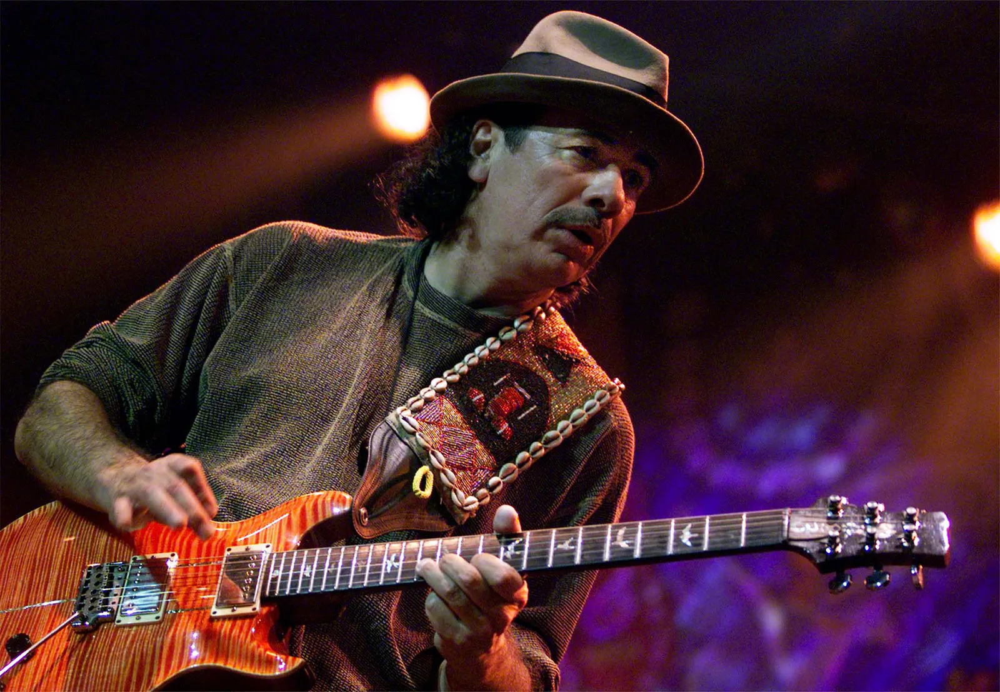

Na Woodstocku wystąpiło 32 zespołów i solistów, reprezentujących różne gatunki muzyczne, od folku po rocka psychodelicznego. Niektórzy z nich byli już wtedy sławni, inni dopiero zyskali popularność dzięki swoim występom. Oto niektórzy z najbardziej znanych artystów, którzy zagrali na Woodstocku:
- Jimi Hendrix - legendarny gitarzysta i wokalista, uważany za jednego z największych muzyków rockowych wszech czasów. Jego występ na Woodstocku był ostatnim na festiwalu i trwał ponad dwie godziny. Najbardziej zapamiętana jest jego wersja amerykańskiego hymnu narodowego, w której naśladował dźwięki bomb i karabinów, nawiązując do wojny w Wietnamie.
- The Who - brytyjski zespół rockowy, znany z energetycznych koncertów i oper rockowych. Na Woodstocku zagrali 25 utworów, w tym całą suitę z albumu Tommy. Ich występ został przerwany przez aktywistę Abbiego Hoffmana, który wtargnął na scenę i zaczął mówić o aresztowaniu Johna Sinclaira, lidera Białych Panter. Gitarzysta Pete Townshend zrzucił Hoffmana ze sceny uderzając go gitarą.
- Janis Joplin - amerykańska piosenkarka i kompozytorka, nazywana "królową rocka". Jej charakterystyczny, pełen emocji głos i styl śpiewania zrobiły na Woodstocku duże wrażenie. Joplin wystąpiła z zespołem Kozmic Blues Band i zaśpiewała 10 piosenek, w tym "Piece of My Heart", "Summertime" i "Ball and Chain".
- Santana - amerykański zespół rockowy, założony przez meksykańskiego gitarzystę.



